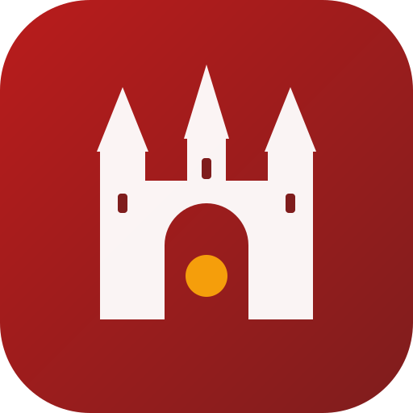

Datenqualität
Jede Woche eine automatische Prüfung aller offenen Datensätze der Stadt nach festen, öffentlichen Regeln – als sachliche Rückmeldung an die Datenhalter.

Offene Daten für Rothenburg ob der Tauber – geprüft, ergänzt, anschlussfähig.
Ein zivilgesellschaftliches Civic-Tech-Projekt des OK Lab Rothenburg, initiiert von Alexander Schnapper. Es kümmert sich um die Grundlage, ohne die keine digitale Anwendung seriös sein kann: eine belastbare Datenbasis.
Jede Woche eine automatische Prüfung aller offenen Datensätze der Stadt nach festen, öffentlichen Regeln – als sachliche Rückmeldung an die Datenhalter.
Geprüfte Orts- und Messdaten in offenen, standardisierten Formaten – als Zulieferung für Land.Open.Data, Knowledge Graphs und andere bestehende Systeme. 100 % Open Source unter GNU GPLv3.
LoRaWAN-Messnetze für Bodenfeuchte und Stadtklima – offen über The Things Network, damit auch Bürger, Schulen und Gewerbe eigene Sensoren einbinden können.
WCAG AAA als Maßstab, Leichte Sprache und stufenfreie Wegeführung auf historischem Pflaster.
Bodenfeuchte- und Temperatursensoren im Wurzelbereich ausgewählter Jungbäume machen Trockenstress sichtbar – als Grundlage für ein Gieß-Dashboard und gezieltere Bewässerungsfahrten.
DIY-Umweltsensoren vergleichen die enge, versiegelte Altstadt mit Kaltluftkorridoren wie Burggarten und Taubertal – Datenbasis für Hitzeschutz und eine spätere „Cool-Route“.
Prototypische Belegungserkennung ausgewählter Parkflächen vor der Stadtmauer, um Parksuchverkehr in den Gassen zu verringern – DSGVO-konform, ohne Kennzeichen-Speicherung.
Noch gibt es keine Sensor-Infrastruktur. Erster Schritt sind ein bis zwei Outdoor-Gateways an erhöhten Punkten, eingebunden in The Things Network.